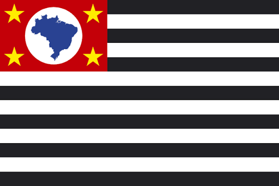

Sobre Mim
Meu nome é Catiana Guillaume , nasci no Haiti e eu vivo no Brasil há alguns anos. Atualmente eu sou estagiaria na area da engenharia civil. Eu sou estudante de desenvolvimento de software e estudante da engenharia civil. Sou formada em administração com enfâse em comercio exterior
São Paulo, Brasil

São Paulo é a maior cidade do Brasil e um dos principais centros econômicos e culturais do país, conhecida por sua diversidade cultural e vibrante, a cidade tem uma rica história e uma vida noturna agitada e animada. A diersidade culinaria é uma das características mais marcantes da cidade.